Asahimachi, Toyama: things to do, food and stays
Asahimachi · Toyama
Asahimachi
Highlighted on the Toyama map.

Stay
小川温泉元湯 ホテルおがわ
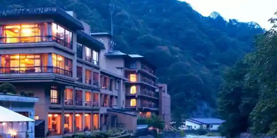
Ogawa Onsen Motoyu Hotel Ogawa
Hotel at Ogawa Onsen in Yunose, Asahimachi with free-flowing hot spring baths.
旅館 城山荘
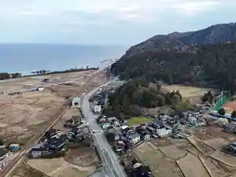
Ryokan Shiroyama So
Ryokan inn in Yoko, Asahimachi with local seafood dinners and business travelers.
料理旅館有磯
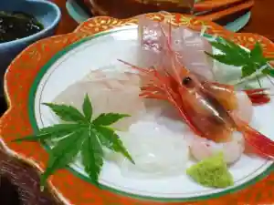
Ryori Ryokan Ariso
Dining
栄食堂
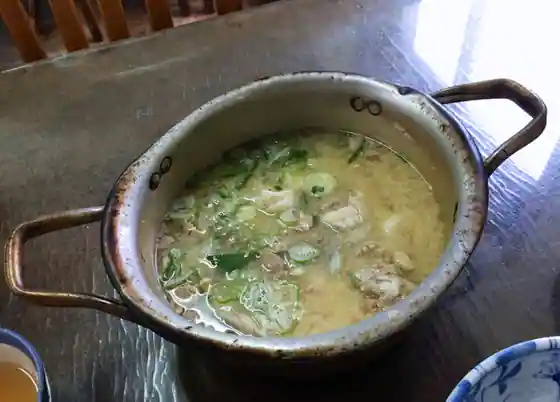
Sakae Shokudo
草の子
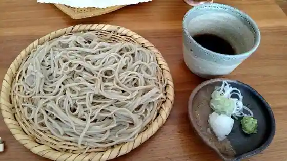
Kusa No Ko
金森
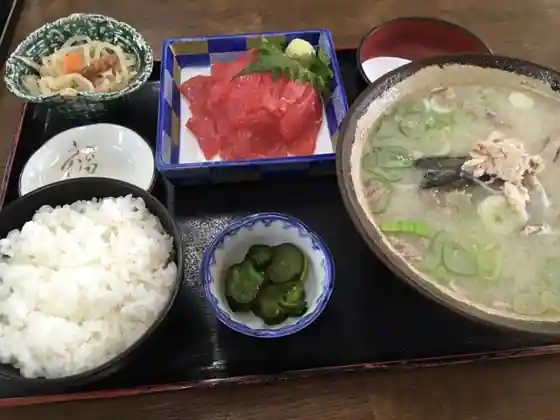
Kanamori
ドライブインきんかい
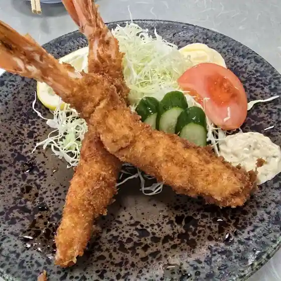
Doraibuin Kinkai
グリル松
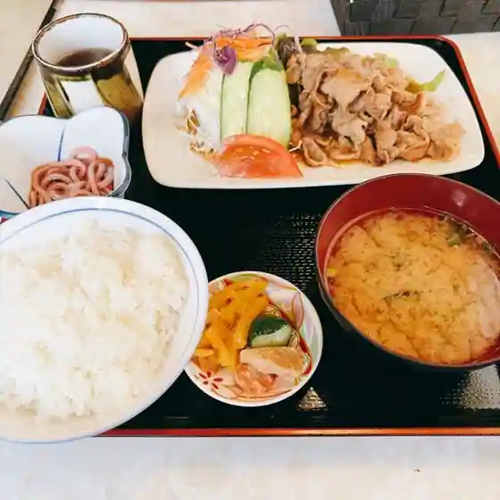
Grill Matsu
ホテルおがわ
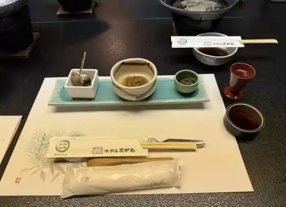
Hotel Ogawa
今日もかえりたい。～Melon et Cafe～
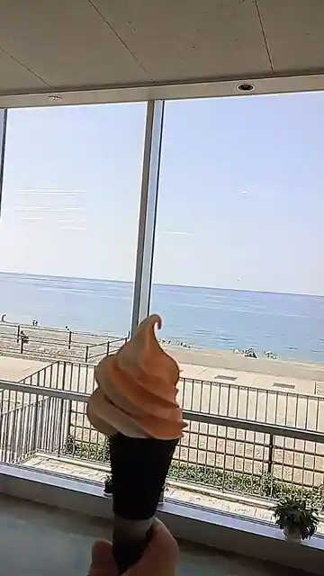
Kyo Mokaeritai. ~Melon et Cafe~
たから温泉
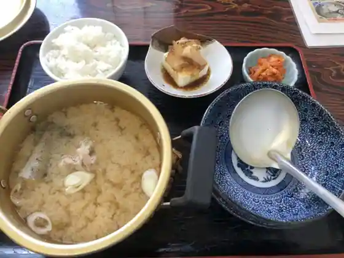
Takara Onsen
ひまつぶし
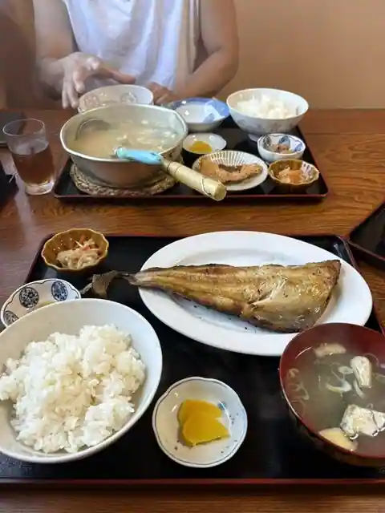
Himatsubushi
元気ラーメン
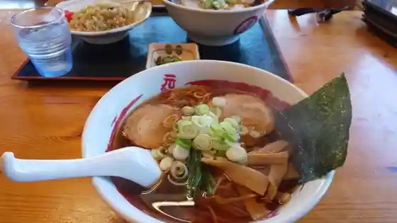
Genki Ramen
歌昌苑
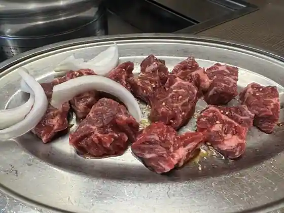
Uta Masa En
我忘
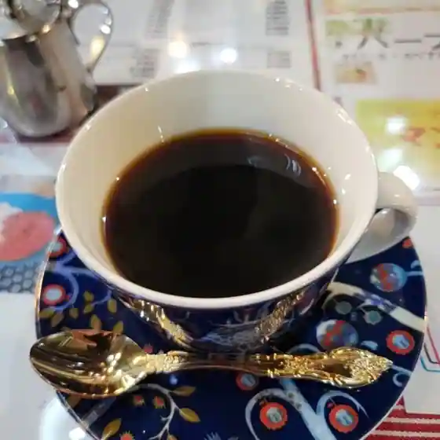
Ware Bo
海鮮食堂仙
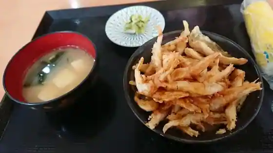
Kaisen Shokudo Sen
ふかみ
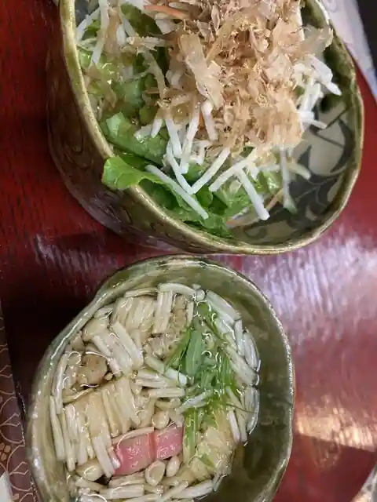
Fukami
スープとスイーツ 七星
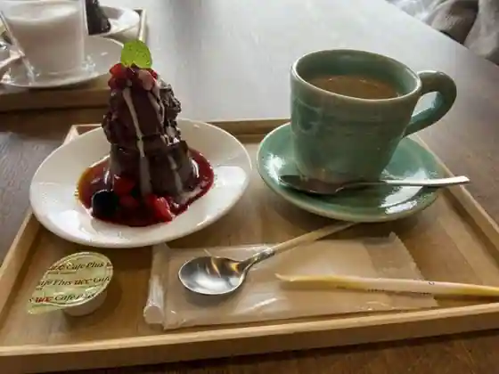
Supu To Sweets Nanae
大むら菓子舗
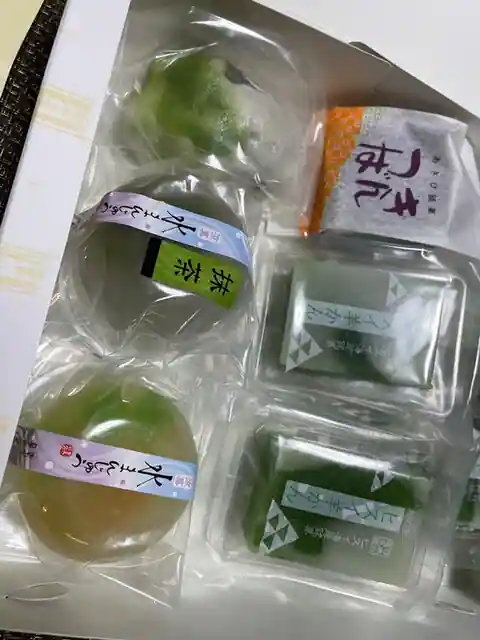
Omu Ra Kashi Ho
ビストロけざけざ
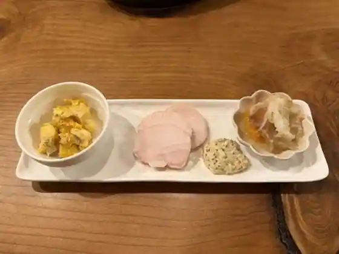
Bistro Kezakeza
五叉路
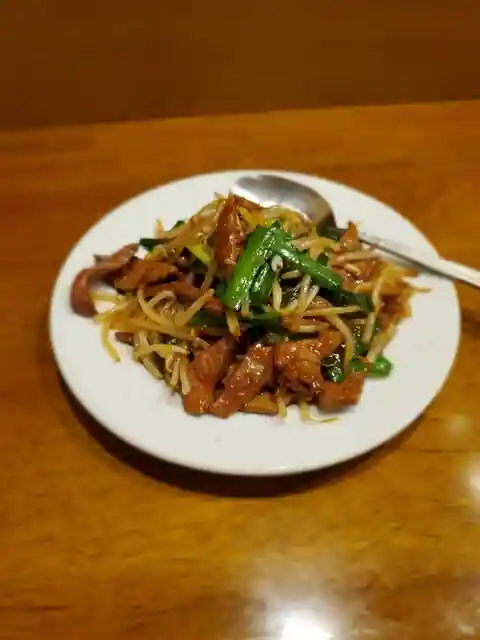
Go Sa Michi
ナチュラルスイーツ ぽんぽん
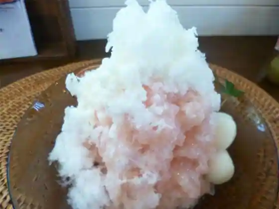
Nachuraru Sweets Ponpon
清水製パン
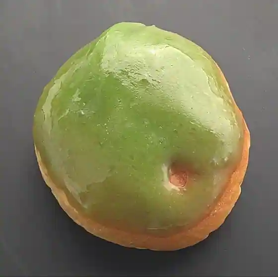
Shimizu Sei Bakery
Sights
Seijaku to Akari

Herbal Valley Ogawa

Asahi Fune Kawa (Haru no Shijuso) / Fune Kawa Beri Sakura Namiki

Kyo Mokaeritai Melon et Cafe Kyomokaeritai Meron E Kafe

Daibubesu 37
Nambo Fuji
Hikyo no Kita Mata Sansaku
Makkii Farm
Kojiya Sakaguchi Ya Jozo Mise
Itadakimasu
SLOWELL COFFEE Suroeru Kohii
Akagawa Yaki (Koshiyama Bo)
Asahimachi Ritsu Furusato Art Museum
Bisutoro Kezakeza
Go Sa Michi Haku Mise Gosaro
Shio Kojoato no Shimizu
Batabata Cha Densho Kan
Sasagawa Togei Center (Sasagawa Yaki)
Hayashi Shuzo Ba
Owashi Yama
Gangu & Fujinfuku Donkii Gangu
Wa Saidan Hassaku
Yubi Mo no cassetta
Ongaku Yume Workshop Goto Sei Ya Memorial Museum
O Shokuji Tokoro Ketsu Oshokujidokoro Yui
Kashi Tokoro Mizushima
Guriru Matsu
Ware Bo Gabo
Shokusai Asahi
Cafe Fukami Kafe Fukami
Supu to Suiitsu Nanae nanahoshi
Cafe Kansuke Kafe
Shimizu Seipan
Terada Sengyoten
Uta Masa En
Ki Village Mame Kashi Mise
Sakae Shokudo
Genki Ra Men Genkira Men
Soba Tokoro Kusa no Ko
Sake Tokoro Shokuji Tokoro Kanda Sakedokoro Shokujidokoro Kanda
Doraibuin Kanamori
Shusai Izumi Sakana Izumi
Ryotei Tsukimi Ie
Sakai no Gokokuji (Shakunage Tera)
Go Sa Michi Kurosufaibu (Fuyu no Irumineshon) Gosarokurosufaibu Fuyu no Irumineshon
Omu Ra Kashi Ho
Tanayama Gorufu Kurabu
Go Sa Michi Kurosufaibu (Mamenake Market)
Kankyo Fureai Shisetsu Rakuchi no Kankyofureaishisetsu Rakuchi no
Maibun KAN
Kita Arupusu Asahimachi Gaku Asahimachi Koya
Takara Onsen
Yusuhosuteru Tenko Tera
Doraibuin Kinkai
Ryokan Shiroyama So
Ryokan
Guest House Kyuzaemon
Ryori Ryokan Mon Hidari Ryoriryokan Monza
Fune Kawa Berihimawari
Meiji Memorial Museum (Anzai Tokoro)
Kashima Juso (Miyazaki Shizen Museum)
Hisui Kaigan Kanko Koryu Kyoten Shisetsu Hisuiterasu
Fudo Do Iseki
Asahimachi Rekishi Park (Kyu Kawakami Ie)
Mibu Guriin Land (Campground) Mitsuboguriinrando (Kyanpujo)
Fune Kawa Beri Higan Hana no Makka Na Jutan
Fune Kawa Beri Tambo Ato
Shiroyama Park
Ryori Ryokan Ariiso
Sushi Hyotan
Ogawa Onsen Motoyu Hotel Ogawa
Nittobibarejji Nittobibarejji Kabushikigaisha
Asahimachi Bunka Taiiku Center (Sanriina) Asahimachibunkataiikusenta (Sanriina)
Hyaku Fugu Art Museum
Basho Kuhi
Tanayama Famirii Land
Sakai Ichiri Tsuka
Nanairo KAN Nanairokan
Asahimachi Hisui Kaigan Oto Campground
Hisui Coast (Miyazaki Sakai Coast) Hisuikaigan (Miyazaki Sakaikaigan)
Asahimachi Town Hall